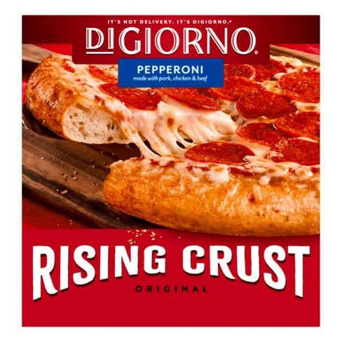

Frozen Pizza

Description
Sometimes, you just don't want to do any work for food. But you still need eat because that's how you survive. Well, this one's as easy as they come. Frozen pizza, or maybe it should be called oven pizza. Well, in the end, it's just pizza. Pizza.
Ingredients
- 1 frozen pizza (You can pick whichever pizza you like best. But whatever you do, make sure you spend a lot of time in the aisle looking at all the pizzas. And open up the doors and hold them for a bit. Then close them and see the fogging you just caused. Now you can't see the pizzas. Oh well, it's not like I have anyone waiting at home.)
Steps
- So you finally got home. Preheat the oven to the specified temperature on the box of the pizza you picked. It's a winner, I'm sure
- Once the oven is preheated, put the pizza in, probably without the cardboard piece underneath if that's your preference. Set a timer for the specified time on the box of the pizza you picked. It's a winner, I'm sure.
- Take it out of the oven when the time is up. Let it sit for bit, otherwise the tomato sauce will burn your mouth.
- Slice the pizza and eat. No matter how long you chose to let the pizza sit, you'll still burn your mouth, but as least you practiced some patience and will learn nothing by the next time you buy a frozen pizza.